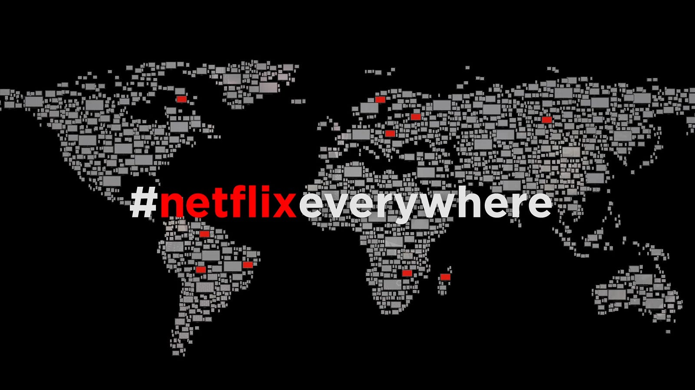

WELCOME
Netflix and the Future of Entertainment
Streaming platforms are becoming the dominant way individuals are consuming entertainment. Netflix has played a huge role in revolutionizing the entertainment industry. Its position in the entertainment industry poses an important study of whether the platform represents innovation or a growing threat. Netflix's exclusive deals, recommendation algorithm, and commissioning power provide a diverse range of high-quality content for their global audiences, but shape who gets access to this entertainment.

Research Question
To what extent does Netflix function as an innovative force in global entertainment, and to what extent does its dominance pose a cultural or structural threat to traditional media industries?